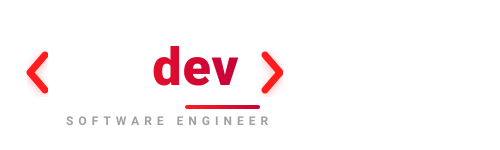
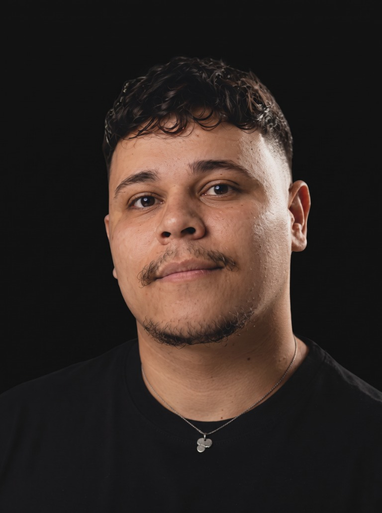

01
Desenvolvimento
Aplicações web, APIs e soluções full stack com foco em clareza, manutenção e valor para o negócio.

Analista de sistemas com 7+ anos de experiência em desenvolvimento, integração, automação e implantação de soluções para operações reais.

Analista de sistemas, desenvolvedor e alguém que gosta de entender a operação antes de escolher a tecnologia.
Atuo do entendimento do problema à entrega em produção: análise, desenvolvimento, integração, implantação e sustentação. Muitos projetos são corporativos e confidenciais; por isso, apresento capacidades e cases sem expor código ou dados de clientes.
Aplicações web, APIs e soluções full stack com foco em clareza, manutenção e valor para o negócio.
Criação de skills, agents e workflows com Claude Code, Gemini, ChatGPT e ferramentas de produtividade.
Configuração, integração e entrega de sistemas em ambientes reais, com foco em estabilidade e operação.
Uma stack pragmática para construir, testar, integrar e colocar soluções para funcionar.
Projetos empresariais podem ser confidenciais. A experiência, os desafios e os resultados continuam podendo ser apresentados com responsabilidade.
Desenvolvimento e sustentação de soluções para processos logísticos, integrações e eficiência operacional.
Este portfólio está sendo construído com Laravel para publicar projetos, skills, serviços e conteúdo técnico.
CLI para organizar contexto de workspaces e preparar informações para agentes de IA.
Vamos conversar sobre automação, desenvolvimento ou implantação de uma solução.